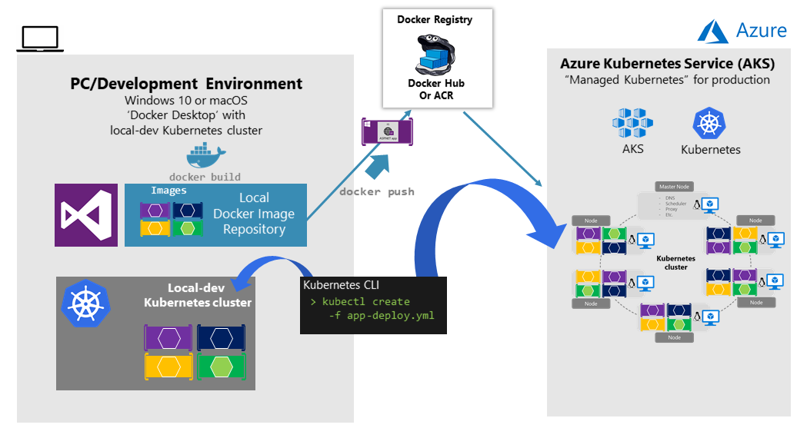
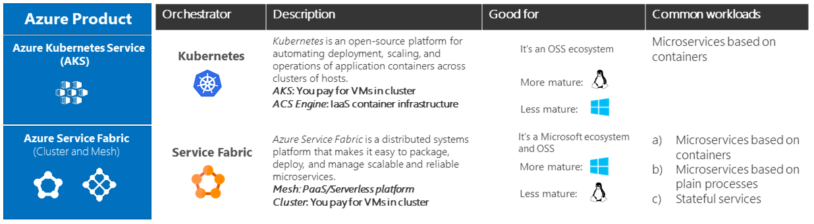

Several cloud vendors offer Docker containers support plus Docker clusters and orchestration support, including Microsoft Azure, Amazon EC2 Container Service, and Google Container Engine. Microsoft Azure provides Docker cluster and orchestrator support through Azure Kubernetes Service (AKS) and Azure Service Fabric and Azure Service Fabric Mesh.
A Kubernetes cluster pools multiple Docker hosts and exposes them as a single virtual Docker host, so you can deploy multiple containers into the cluster and scale-out with any number of container instances. The cluster will handle all the complex management plumbing, like scalability, health, and so forth.
AKS provides a way to simplify the creation, configuration, and management of a cluster of virtual machines in Azure that are preconfigured to run containerized applications. Using an optimized configuration of popular open-source scheduling and orchestration tools, AKS enables you to use your existing skills or draw on a large and growing body of community expertise to deploy and manage container-based applications on Microsoft Azure.
Azure Kubernetes Service optimizes the configuration of popular Docker clustering open-source tools and technologies specifically for Azure. You get an open solution that offers portability for both your containers and your application configuration. You select the size, the number of hosts, and the orchestrator tools, and AKS handles everything else.
Figure 4-24. Kubernetes cluster’s simplified structure and topology
If figure 4-24 you can see the structure of a Kubernetes cluster where a master node (VM) controls most of the coordination of the cluster and you can deploy containers to the rest of the nodes which are managed as a single pool from an application point of view and allows you to scale to thousands or even tens of thousands of containers.
In the development environment, Docker announced in July 2018 that Kubernetes can also run in a single development machine (Windows 10 or macOS) by simply installing Docker Desktop. You can later deploy to the cloud (AKS) for further integration tests, as shown in figure 4-25.

Figure 4-25. Running Kubernetes in dev machine and the cloud
To begin using AKS, you deploy an AKS cluster from the Azure portal or by using th CLI. For more information on deploying an Azure Container Service cluster, see Deploy an Azure Kubernetes Service (AKS) cluster.
There are no fees for any of the software installed by default as part of AKS. All default options are implemented with open-source software. AKS is available for multiple virtual machines in Azure. You’re charged only for the compute instances you choose, as well as the other underlying infrastructure resources consumed, such as storage and networking. There are no incremental charges for AKS itself.
For further implementation information on deployment to Kubernetes based on kubectl and original .yaml files, check the post on Setting eShopOnContainers up in AKS (Azure Kubernetes Service).
When deploying an application to a Kubernetes cluster, you can use the original kubectl.exe CLI tool using deployment files based on the native format (.yaml files), as already mentioned in the previous section. However, for more complex Kubernetes applications such as when deploying complex microservice-based applications, it’s recommended to use Helm.
Helm Charts helps you define, version, install, share, upgrade or rollback even the most complex Kubernetes application.
Going further, Helm usage is also recommended because additional Kubernetes environments in Azure, such as Azure Dev Spaces are also based on Helm charts.
Helm is maintained by the Cloud Native Computing Foundation (CNCF) - in collaboration with Microsoft, Google, Bitnami and the Helm contributor community.
For further implementation information on Helm charts and Kubernetes check the post on Using Helm Charts to deploy eShopOnContainers to AKS.
Azure Dev Spaces provides a rapid, iterative Kubernetes development experience for teams. With minimal dev machine setup, you can iteratively run and debug containers directly in Azure Kubernetes Service (AKS). Develop on Windows, Mac, or Linux using familiar tools like Visual Studio, Visual Studio Code, or the command line.
As mentioned, Azure Dev Spaces uses Helm charts when deploying the container-based applications.
Azure Dev Spaces helps development teams be more productive on Kubernetes because it allows you to rapidly iterate and debug code directly in a global Kubernetes cluster in Azure by simply using Visual Studio 2017 or Visual Studio Code. That Kubernetes cluster in Azure is a shared managed Kubernetes cluster, so your team can collaboratively work together. You can develop your code in isolation, then deploy to the global cluster and do end-to-end testing with other components without replicating or mocking up dependencies.
As shown in figure 4-26, the most differential feature in Azure Dev Spaces is capability of creating ‘spaces’ that can run integrated to the rest of the global deployment in the cluster.
Figure 4-26. Using multiple spaces in Azure Dev Spaces
Basically you can set up a shared dev space in Azure. Each developer can focus on just their part of the application, and can iteratively develop pre-commit code in a dev space that already contains all the other services and cloud resources that their scenarios depend on. Dependencies are always up-to-date, and developers are working in a way that mirrors production.
Azure Dev Spaces provides the concept of a space, which allows you to work in isolation, and without the fear of breaking your team members. This feature is based on URL pre-fixes, so if using any dev space prefix in the URL, for every container’s request, it will run a special version of the container is deployed for that space it it exists. Otherwise, it will run the global/consolidated version.
You can see the eShopOnContainers wiki page on Azure Dev Spaces, to get a practical view on a concrete example.
For further information check the article on Team Development with Azure Dev Spaces.
Azure Service Fabric arose from Microsoft’s transition from delivering box products, which were typically monolithic in style, to delivering services. The experience of building and operating large services at scale, such as Azure SQL Database, Azure Cosmos DB, Azure Service Bus, or Cortana’s back end, shaped Service Fabric. The platform evolved over time as more and more services adopted it. Importantly, Service Fabric had to run not only in Azure but also in standalone Windows Server deployments.
The aim of Service Fabric is to solve the hard problems of building and running a service and utilizing infrastructure resources efficiently, so that teams can solve business problems using a microservices approach.
Service Fabric provides two broad areas to help you build applications that use a microservices approach:
Service Fabric is agnostic with respect to how you build your service, and you can use any technology. However, it provides built-in programming APIs that make it easier to build microservices.
As shown in Figure 4-27, you can create and run microservices in Service Fabric either as simple processes or as Docker containers. It’s also possible to mix container-based microservices with process-based microservices within the same Service Fabric cluster.
Figure 4-27. Deploying microservices as processes or as containers in Azure Service Fabric
Service Fabric clusters based on Linux and Windows hosts can run Docker Linux containers and Windows Containers, respectively.
For up-to-date information about containers support in Azure Service Fabric, see Service Fabric and containers.
Service Fabric is a good example of a platform where you can define a different logical architecture (business microservices or Bounded Contexts) than the physical implementation that were introduced in the Logical architecture versus physical architecture section. For example, if you implement Stateful Reliable Services, which are introduced in the section Stateless versus stateful microservices later, you can have a business microservice concept with multiple physical services.
As shown in Figure 4-28, and thinking from a logical/business microservice perspective, when implementing a Service Fabric Stateful Reliable Service, you usually will need to implement two tiers of services. The first is the back-end stateful reliable service, which handles multiple partitions (each partition is a stateful service). The second is the front-end service, or Gateway service, in charge of routing and data aggregation across multiple partitions or stateful service instances. That Gateway service also handles client-side communication with retry loops accessing the back-end service. It’s called a Gateway service if you implement your custom service, or alternatively you can also use the out-of-the-box Service Fabric reverse proxy.
Figure 4-28. Business microservice with several stateful service instances and a custom gateway front-end
In any case, when you use Service Fabric Stateful Reliable Services, you also have a logical or business microservice (Bounded Context) that’s usually composed of multiple physical services. Each of them, the Gateway service and Partition service could be implemented as ASP.NET Web API services, as shown in Figure 4-28.
In Service Fabric, you can group and deploy groups of services as a Service Fabric Application, which is the unit of packaging and deployment for the orchestrator or cluster. Therefore, the Service Fabric Application could be mapped to this autonomous business and logical microservice boundary or Bounded Context, as well, so you could deploy these services autonomously.
With regard to containers in Service Fabric, you can also deploy services in container images within a Service Fabric cluster. As Figure 4-29 shows, most of the time there will only be one container per service.
Figure 4-29. Business microservice with several services (containers) in Service Fabric
However, so-called “sidecar” containers (two containers that must be deployed together as part of a logical service) are also possible in Service Fabric. The important thing is that a business microservice is the logical boundary around several cohesive elements. In many cases, it might be a single service with a single data model, but in some other cases you might have several physical services as well.
Note that you can mix services in processes and services in containers in the same Service Fabric application, as shown in Figure 4-30.
Figure 4-30. Business microservice mapped to a Service Fabric application with containers and stateful services
For more information about container support in Azure Service Fabric, see Service Fabric and containers.
As mentioned earlier, each microservice (logical Bounded Context) must own its domain model (data and logic). In the case of stateless microservices, the databases will be external, employing relational options like SQL Server, or NoSQL options like Azure Cosmos DB or MongoDB.
But the services themselves can also be stateful in Service Fabric, which means that the data resides within the microservice. This data might exist not just on the same server, but within the microservice process, in memory and persisted on hard drives and replicated to other nodes. Figure 4-30 shows the different approaches.
Figure 4-31. Stateless versus stateful microservices
A stateless approach is perfectly valid and is easier to implement than stateful microservices, since the approach is similar to traditional and well-known patterns. But stateless microservices impose latency between the process and data sources. They also involve more moving pieces when you’re trying to improve performance with additional cache and queues. The result is that you can end up with complex architectures that have too many tiers.
In contrast, stateful microservices can excel in advanced scenarios, because there’s no latency between the domain logic and data. Heavy data processing, gaming back ends, databases as a service, and other low-latency scenarios all benefit from stateful services, which enable local state for faster access.
Stateless and stateful services are complementary. For instance, you can see in Figure 4-31, in the right diagram, that a stateful service could be split into multiple partitions. To access those partitions, you might need a stateless service acting as a gateway service that knows how to address each partition based on partition keys.
Stateful services do have drawbacks. They impose a level of complexity that allows to scale out. Functionality that would usually be implemented by external database systems must be addressed for tasks such as data replication across stateful microservices and data partitioning. However, this is one of the areas where an orchestrator like Azure Service Fabric with its stateful reliable services can help the most—by simplifying the development and lifecycle of stateful microservices using the Reliable Services API and Reliable Actors.
Other microservice frameworks that allow stateful services, that support the Actor pattern, and that improve fault tolerance and latency between business logic and data are Microsoft Orleans, from Microsoft Research, and Akka.NET. Both frameworks are currently improving their support for Docker.
Note that Docker containers are themselves stateless. If you want to implement a stateful service, you need one of the additional prescriptive and higher-level frameworks noted earlier.
Azure Service Fabric Mesh is a fully managed service which enables developers to build and deploy mission critical applications without managing any infrastructure. Use Service Fabric Mesh to build and run secure, distributed microservices applications that scale on demand.
As shown in figure 4-32, applications hosted on Service Fabric Mesh run and scale without you worrying about the infrastructure powering it.
Figure 4-32. Deploying a microservice/containers application to Service Fabric Mesh
Under the covers, Service Fabric Mesh consists of clusters of thousands of machines. All cluster operations are hidden from the developer. You simply need to upload your containers and specify resources you need, availability requirements, and resource limits. Service Fabric Mesh automatically allocates the infrastructure requested by your application deployment and also handles infrastructure failures, making sure your applications are highly available. You only need to care about the health and responsiveness of your application, not the infrastructure.
For further information see the Service Fabric Mesh documentation.
The following table provides guidance on what orchestrator to use depending on workloads and OS focus.

Figure 4-33. Orchestrator selection in Azure guidance